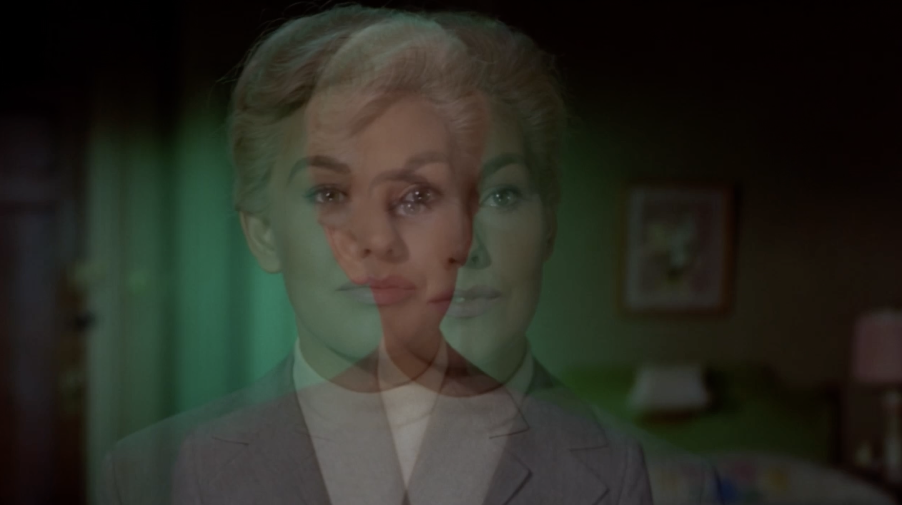

Clip 1: The Climactic Kiss (Overlapped) — The ghostly slippage between Hitchcock’s original frame and the AI’s interpolation.
Vertigo Vertigo
An Artificial Recreation of an Obsessive Fantasy

Project Description
Vertigo Vertigo is an experimental video work that enacts a scene-for-scene recreation of Alfred Hitchcock’s Vertigo using only 3% of the film's original frames. By extracting these keyframes and utilizing a neural network to run first-last frame interpolation, the project forces the AI to "fill in the blanks" of the intermediary spaces. The resulting film physically overlaps with the original at its anchor points, but constantly diverges, hallucinates, and re-merges in the spaces between.
Hitchcock’s Vertigo is fundamentally a film about the obsessive, doomed attempt to reconstruct an artificial ideal. Vertigo Vertigo applies this same logic of obsession and reconstruction to the material of the film itself. It asks what happens when our foundational cinematic myths are stripped to their bones and re-fleshed by the latent space of contemporary machine vision. Where the interpolation succeeds, it mimics our cultural memory; where it fails or glitches, it exposes the mechanical, constructed nature of the cinematic apparatus and the biases of the networks trained upon it.
Feedback Request
As I prepare a paper on this project for the Ars Electronica Expanded Animation conference, I would be deeply grateful for your brief reflections on the work. I know your time is valuable, so please feel free to be as brief or expansive as you wish.
Question 1
Looking at the technical and aesthetic construction of the work across
the three display methods, how legible is the intervention? What are
your immediate reactions to the visual slippage between Hitchcock's
original frames and the machine's hallucinations?
Question 2
Vertigo centers on the obsessive construction and
reconstruction of a powerful fiction, particularly regarding gender
and the male gaze. How do you feel this methodology—using an algorithm
to force a reconstruction of a cinematic memory from a fragmented
archive—converses with the themes of the original film and the history
of cinema?
Question 3
The AI interpolates these missing frames based on a generalized logic
derived from its training data. What might this project suggest about
how machine vision inherits, processes, or perhaps fractures
traditional cinematic myths as we move toward future media paradigms?
Video Demonstrations
Please find three short excerpts below demonstrating the different methods of rendering this machine-hallucinated intermediary space.
Clip 2: The Stalking Sequence (Side-by-Side) — A comparative view highlighting the AI's interpretation of spatial continuity and movement.
Clip 3: The Red Room (Subtracted) — A 'subtracted' blend where only the mathematical and visual differences between the original film and the AI interpolation are visible.
Reference: Full Work-in-Progress — The complete film for scrubbing and broader context (Optional viewing).